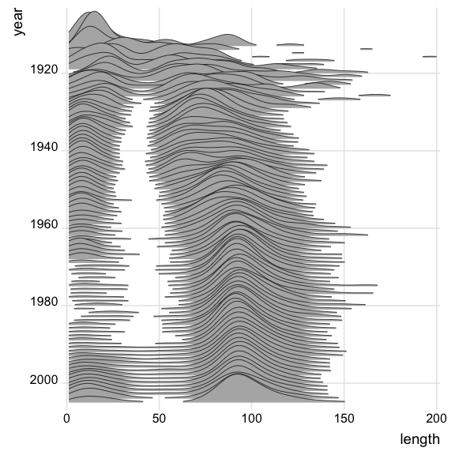

Introduction aux Data Sciences
2022-10-02
Chapitre 1 Avant propos

Ce bookdown présent les éléments d’un cours de data science avec r. Il est reproductible, on peut en cloner les élements à partir du repository. Le texte est encore hasardeux, les codes sont vérifiés. Il sera dynamique, modifié à mesure de nos cours, séminaires et ateliers.
L’illustration de couverture représente l’évolution de la longueur des films de la base Imbd et raconte en chiffres un aspect de l’histoire du cinéma. Jusqu’aux années 30, la longueur est hétérogène ensuite elle se se stabilise : les courts-métrages ont une durée de l’ordre de 15mn qui se raccourcit avec les décennies, ce genre menace de disparaître dans les années 80 et reprend du poil de la bête dans les années 2000. Les films longs voient leur longueur s’accroître et se stabiliser autour d’un peu moins de 100 mn, soit une heure et quarante minutes. On observera enfin qu’au cours des années 1990 les films de taille intermédiaires réapparaissent. On devinera dans cette évolution l’émergence de standards, ou de conventions. Les faits viennent au secours des théories…
Dans ce graphique il y a tous les éléments des data sciences contemporaines : un jeu de données riche et systématique, un modèle statistique fondamental avec la notion de densité de probabilité, une mesure, un critère de comparaison.
Les diagrammes ridges, c’est ainsi qu’on les appelent, sont inspirés de la pochette de l’album Unknown Pleasures de Joy division sorti en pleine période New Wave, en 1979. Un article de Vice en rappele l’origine et le destin du graphisme qu’on connait mieux imprimé sur des t-shirt que dans les cours de statistiques.
1.1 Plan du manuel
C’est un projet en cours, Les chapitres projetés sont les suivants. certains sont dans les limbes, d’autres ont pris consistances
- 1 - L’environnement r x
- 2 - Installation et prise en main x
- 3 - Usage de ggplot - uni et bivarié x
- 4 - Usage de ggplot - multivarié x
- 6 - Analyse de variance et régression linéraire x
- 5 - Tables
- 6 - Modèles factoriels ( Psych) x
- 7 - AFC x
- 8 - MDS
- 9 - Clustering x
- 10 - Analyse de réseaux
- 10 - Modèle d’équations structurelles (Lavaan)
- 11 - Modèle linéaire généralisé
- 12 - Modèles à décomposition d’erreur
- 13 - Times series
- 14 - Analyse spatiale et géographique
- 15 - Machine learning x
1.2 Les jeux de données
Au cours du développement, plusieurs cas pratiques - souvent réduit en volume pour rester exemplaire, seront employés. Les données seront partagées.
En voici la présentation des sets de données utilisées dans le syllabus. Elle sont disponible dans le répertoire “./data/”
- ESS : c’est une très belle base de données de sociologie.
- happydemics : observatoire de la présidentielle2022
- Arpur
1.3 Le cadre technique et les packages utilisés
Ce syllabus est écrit en Markdown (Allaire et al. 2021) et avec le package Bookdown (Xie 2021)
Le code s’appuie très largement sur tidyverse et emploie largement les ressources de ggplot. Les packages seront introduits au fur et à mesure. En voici la liste complète.
options(tinytex.verbose = TRUE)
knitr::opts_chunk$set(echo = TRUE, include=TRUE, cache=TRUE, message=FALSE, warning=FALSE)
#boite à outils et dataviz
library(tidyverse) # inclut ggplot pour la viz, readr et
library(cowplot) #pour créer des graphiques composés
library(ggridges) # le joy division touch
library(ggmosaic)
#networks
library(igraph)
library(ggraph)
# Accéder aux données
library(rtweet) # une interface efficace pour interroger l'api de Twitter
# NLP
library(tokenizers)
library(quanteda)
library(quanteda.textstats)
library(udpipe) #annotation syntaxique
library(tidytext)
library(cleanNLP) #annotation syntaxique
#sentiment
library(syuzhet) #analyse du sentimeent
#mise en page des tableaux
library(flextable)
#statistiques et modèles
library(lme4) #pour des modèles plus complexe que les mco
library(jtools) #une série d'utiltaire pour bien représenter les résultats
library(interactions) #traitement des interactions
library(corrplot)
library(psych)
#ACP et AFCM
library("FactoMineR")
library("factoextra")
#ML
library(caret)
#utilitaires
library(rcompanion)
#graphismes
library(ggthemes)
theme_set(theme_bw())
#palettes
library(colorspace) #pour les couleurs
library(wesanderson)
#regression
library(lme4)
library(jtools)
library(interactions)
library(betareg)
# Utilitaires
library(citr) #pour insérer des références dans le markdown
#config plot
theme_set(theme_minimal())L’ensemble du code est disponible sur github. A ce stade c’est encore embryonnaire. Les proches et nos étudiants pourrons cependant y voir l’évolution du projet et de la progression
Quelques conventions d’écriture du code r
- On appele les dataframes de manière générale
df, les tableaux intermédiaires sont appelé systématiquementfoo - Gestion des palettes de couleurs ** une couleur :” royalblue” ** deux couleurs ** 3 à 7 couleurs
- On emploie autant que possible le dialecte tidy.
- Les chunks sont notés en 4 chiffre : 2 pour le chapitre et deux pour le chunck. 0502 est le second chunk du chapitre 5.
- On commente au maximum les lignes de code pour épargner le corps du texte et le rendre lisible
1.4 A faire
todo list :
- insérer un compteur google analytics ( voir https://stackoverflow.com/questions/41376989/how-to-include-google-analytics-in-an-rmarkdown-generated-github-page)
- modifier le titre en haut à gauche
- vérifier le système de références voir ( https://doc.isara.fr/tuto-zothero-5-bibtex-rmarkdown-zotero/)
- Vérifier la publication en pdf